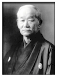

Hvad er judo?
Judo er mange ting. Judo er SPORT – SELVFORSVAR – MOTION alt sammen i en idrætsgren.
Judo er en spændende, oplivende og meget fornøjelig nutidssport.
Judo-sporten
Judo-sporten blev udarbejdet af professor Jigoro Kano i slutningen af det nittende århundrede og blev snart populær i den vestlige verden. Takket være hans indsats var judoden første orientalske kampform, der vandt udbredelse over hele verden.
Fra den første dag en ny judoelev kommer ind i en dojo (træningssal) vil han blive grebet af denne fascinerende sport. De færdigheder og den kunnen han erhverver sig ved energisk træning, vil han få glæde af hele livet. Professor Kano udtrykte det på denne måde: Judo er det middel, hvorved man lærer at forstå, hvordan man mest effektivt kan bruge både sin legemlige og sin åndelige styrke. Ved ihærdig træning og streng selvdiciplin for at nå det fuldkomne i angreb og forsvar lutres både krop og sjæl, og til sidst fornemmer man judosportens inderste væsen med hver eneste fibre. På denne måde er det muligt at dygtiggøre sig selv og derved yde sit bidrag til en bedre verden.
Judo-teknik er overordentlig alsidig, og det afhænger fuldstændig af den øjeblikkelige situation, hvilken teknik man vil bruge. Selve kernen eller ideen i judo er den dygtige anvendelse af modstandskraft kombineret med udnyttelsen af vildledende undvigemanøvre, med andre ord at sætte teknisk dygtidhed ind mod brutal styrke – og vinde.
Judoens kunst ligger i udøverens evne til at kunne fortolke sin modstanders kropsbevægelser. Hvis for eksempel en mand havde kræfter for tre og hans modstander for to, ville den stærkeste vinde. Men hvis den svageste forenede sin styrke med den stærkeste ved at skubbe, når den stærkeste trak, ville han forboble sin styrke og med lethed kaste den stærkeste til jorden.
Dette er et af grundprincipperne i god judoteknik, og det er opnåelsen af denne færdighed, kombineret med en elegant udførelse af hver eneste bevægelse under kappestrid med en modstander, der giver udøveren den største glæde ved sin sport.
Den moderne judo består i dag af 4 elementer. Faldteknik, kasteteknik, gulvkamp og armlåse og stranguleringer.
Faldteknik
Det er nødvendigt at lære at falde rigtigt for at få udbytte af judotræningen. Muligheden for at blive kastet til måtten fra alle vinkler, må tages i betragning, når man træner faldteknik. Det er nødvendigt i starten at lære faldteknik langsomt og tæt ved måtten og så gradvis falde med større hastighed og højde, med hyppige skift af faldvinklen, indtil judoeleven (judokaen) har opnået færdighed og sikkerhed i enhver faldsituation man kan komme til at befinde sig i. Kun når man har fuldstændig sikkerhed for, at man kan falde uden at komme til skade, vil en judoka være i stnad til at optræde sikkert, når man kæmper med en modstander.
Kasteteknik
Kasteteknik er selve grundlaget for judo, og det er følelsen af at kunne kæmpe både mentalt og fysisk med en modstander uden at frygte alvorlige skader, der har givet judo dens verdensomspændende popularitet.
Der er utallige kasteteknikker, hver eneste baseret på forskellige dele af kasterens krop.
Håndteknikker
som tai-o-toshi, hvor hovedvægten er et meget stærkt greb og brug af armene for at kaste en modstander.
Skulderteknikker
som ippon-seio-nage, hvor det er et godt greb kombineret med en teknik på modstanderens skulder der vil kaste modstanderen.
Hofteteknik
som o-gosho og harai-goshi hører til blandt de stærkeste judokast, hvor kastet udføres hen over hoften.
Benteknikker
som o-soto-gari og de-ashi-barai, hvor enten foden eller benet bliver brugt til at feje modstanderen til jorden.
Ryg- og sidefaldsteknikker
som tomoe-nage og tana-otoshi, hvor man kaster sin modstander henover sig.